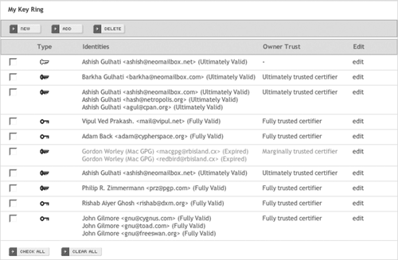

11.3. Usability Is the Key
Email privacy software often requires users to jump through too many hoops, so very few bother to use it. Usability is critical to the success of any security solution, because if the system isn't usable, it will end up being bypassed or used in an insecure manner, in either case defeating its whole purpose.
A case study of the usability of PGP conducted at Carnegie Mellon University in 1998 pointed out the specialized challenges of creating an effective and usable interface for email encryption and found that of 12 study participants, all of whom were experienced at using email, "only one-third of them were able to use PGP to correctly sign and encrypt an email message when given 90 minutes in which to do so."[ ]
]
[
I saw Cryptonite as an interesting project in terms of designing a secure, reliable, and efficient email system while achieving a very high level of usability. I set out to create a web-mail system that would embed OpenPGP security into the very structure of the email experience, and help even casual users to effectively utilize OpenPGP to achieve communications privacy. The webmail format was chosen specifically because it could bring powerful communications privacy technology to anyone with access to an Internet café, or a cellphone with a web browser, not just to the few able to run desktop email encryption software on powerful computers.
Cryptonite was designed to make encryption a normal part of everyday email, not by masking the complexities of the public-key cryptosystems that it relies on, but rather by making the elements of these systems clearer and more accessible to the user. Usability considerations were thus central to Cryptonite's design and development, as was manifested in a number of ways:
Development of UI functionality from user feedback and usability studies
-
The CMU user study provided many good ideas for the initial design, and many features evolved out of usability testing with Cryptonite itself by casual email users. The interface was kept clean, minimalist, and consistent, with all important actions being at most one or two clicks away at all times.
Significant insights gleaned from usability testing included the need to integrate key management into the email client, the need to offer persistence for decrypted messages, and the desirability of exposing message structure information in the message list view.
The final three-pane layout, similar to that found on desktop email programs, was decided on after testing a simple single-pane HTML interface as well as an AJAX inter-face. The three-pane interface optimized the user's experience by not forcing a page reload every time one returned to the message list, as a single-pane design does, and a simple three-pane HTML interface was both more portable and cleaner to implement than an AJAX one, while not being much more bandwidth-intensive.
Rich and meaningful exposure of OpenPGP objects to the user in an intuitive way
-
All key operations are available to the user, including generating, importing and exporting keys; checking key signatures and fingerprints; certifying keys and revoking key certifications; and publishing keys to and retrieving them from a key server. This puts the user in full control of her own web of trust. The validity and trust levels of keys are visible explicitly in text, as well as by color-coding in the key list. Key trust values are always kept updated with the latest state of the key ring and trust database.
The UI's Key Ring view, illustrated in Figure 11-2, shows the validity of all user identities for each key, both in text and by color-coding. It also shows the key type, using icons, and owner trust values for each key (both in text and by color-coding). Full details for any key are available through the "edit" link for the key.
Warnings and feedback about security implications of user actions
-
Giving users the power to manage keys brings the risk that they will use their abilities in ways that weaken the security of the system. So, it is also the application's job to educate the user about security implications of actions such as certifying a key, altering a key's trust level, or signing a message.
All screens in Cryptonite that allow for actions with security implications contain short, highlighted warnings about these implications. And they're right on the same screen, not in irritating pop-up boxes.
Figure 11-2. The Key Ring view exposes information on keys and trust

Built-in associations
-
Cryptonite's concept of a user's identity is strongly tied to the private keys in the user's key ring. When sending mail, users can use any "From" address that corresponds to a private key in their key ring. This helps the user grasp in an intuitive and inescapable way the idea of a private key. Public keys can be tied to contacts in the user's address book, so they can be picked up for automatic encryption whenever available.
Full-featured email client
-
Cryptonite is primarily an email client that just happens to have complete support for OpenPGP-based security and key management built in. An important usability goal was to provide the user with a full-featured email client without letting the security functionality get in the way of its usability for email. This required not only providing the full range of features a user would expect to find in an email client but, most significantly, enabling users to search through their mail folders, including text within encrypted messages, without much more complexity than a regular email client where all messages are stored unencrypted.